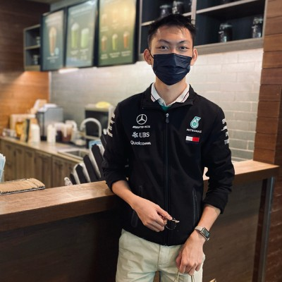

Technical Analyst
Transforming business operations through Infrastructure, Microsoft 365, Automation and AI-driven solutions.
Years Experience
Users Supported
Projects
Automation Focus
Managing Microsoft 365 services, user support, licensing and productivity solutions.
Supporting networks, hardware, software and business IT operations.
Using Excel, Power Automate and AI to reduce manual work and improve efficiency.
Analyzing technical requirements and business needs to deliver practical solutions.
Technical Analyst with hands-on experience in IT infrastructure, Microsoft 365, network troubleshooting, automation, vendor coordination, and business technology solutions. Passionate about improving operational efficiency through technology and automation.
Excel automation for infrastructure planning and utilization monitoring.
Centralized asset inventory and lifecycle management.
Deployment, testing, commissioning and project support activities.
LinkedIn: Connect with me